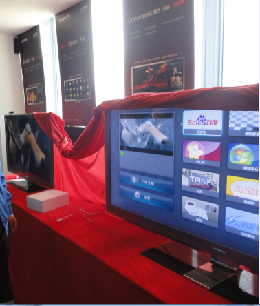

我现在想要的电视，是连网方便，看youku, tudou上高清视频的就可以。@2076017663_999:#卡萨帝社交电视微直播#【产品展示】卡萨帝社交智能电视还装载了优化后的Andriod2.2开放式操作系统，支持Flash10.1、微博、QQ、MSN等上万种应用软件，消费者可以根据自己需求自装自卸。此外，卡萨帝电视还装载了可与苹果APP Store媲美的应用商店，充分满足了消费者的个性化娱乐需求。 